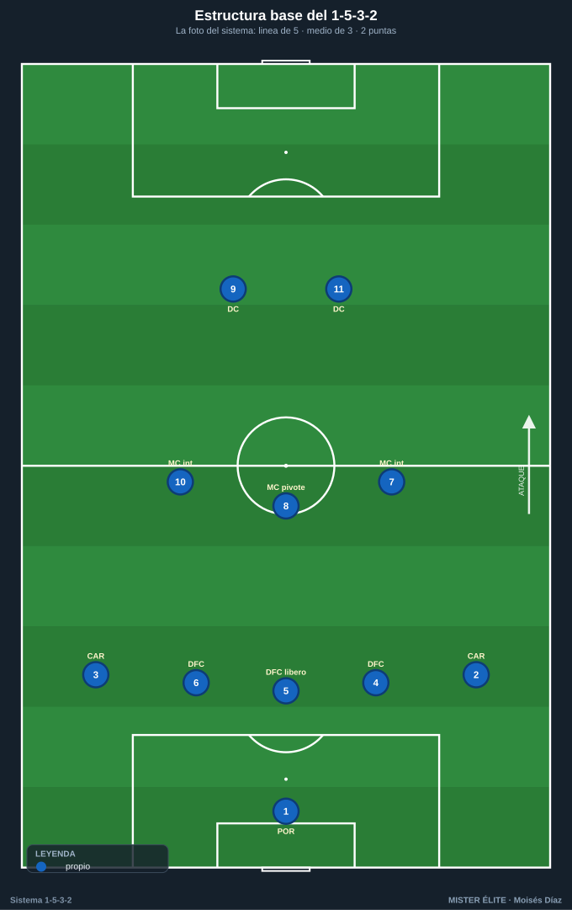
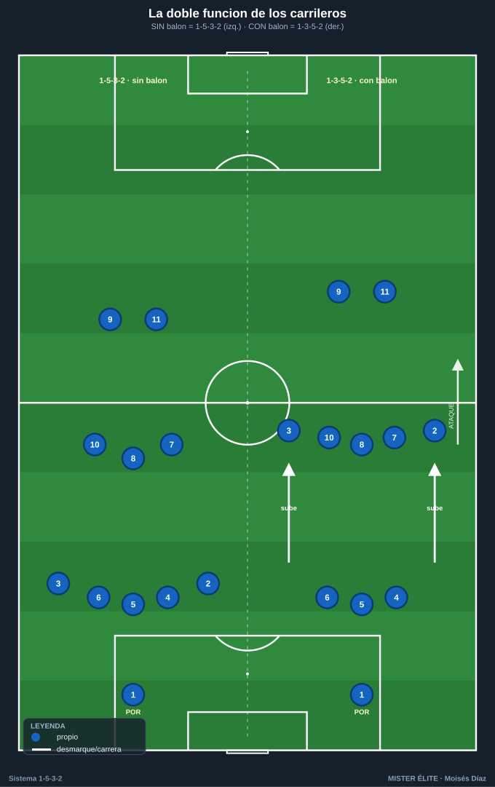
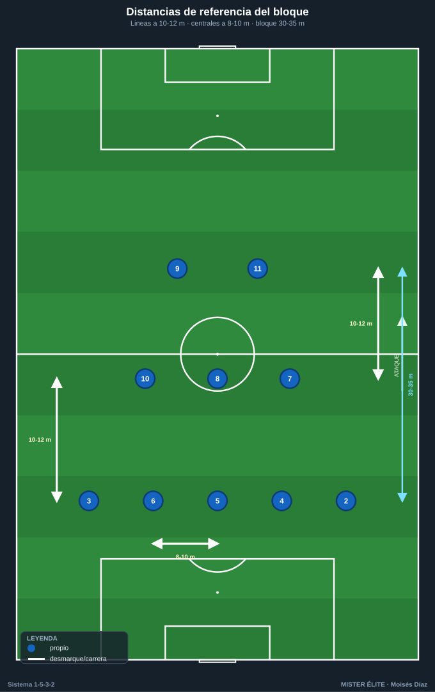
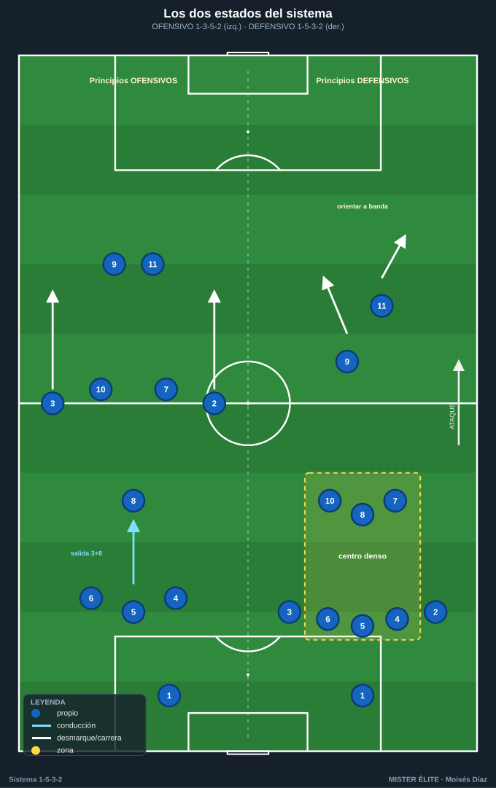
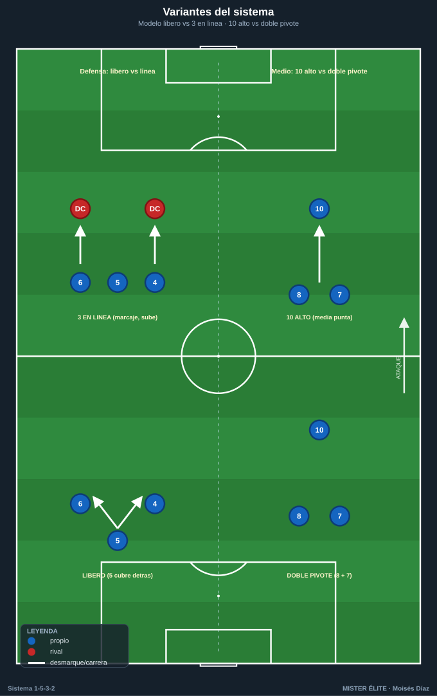

Módulo 01 · Fundamentos y estructura del 1-5-3-2
Con balón el equipo es un 1-3-5-2; sin balón, un 1-5-3-2. Esa mutación —y quién la ejecuta— es lo primero que hay que enseñar.
El 1-5-3-2 es un sistema con línea defensiva de 5 (3 centrales + 2 carrileros), medio de 3 (1 pivote + 2 interiores) y 2 puntas. Su rasgo identitario no es el número de defensas, sino la doble función de los carrileros: el sistema respira entre dos formas según quién tiene el balón.

1. Las cuatro unidades
| Unidad | Jugadores (dorsal) | Función base |
|---|---|---|
| Línea de 3 centrales (DFC) | 4 (dcho.), 5 (central/líbero), 6 (izdo.) | Construcción + coberturas escalonadas. El 5 organiza la línea. |
| 2 carrileros (CAR) | 2 (dcho.), 3 (izdo.) | Anchura en ataque / 4.º y 5.º defensa sin balón. La pieza clave. |
| Medio de 3 (MC) | 8 (pivote), 7 y 10 (interiores) | Control del centro, superioridad, llegada. |
| 2 puntas (DC) | 9 (referencia), 11 (ruptura/móvil) | Presión, fijación de centrales y finalización. |
2. La clave del sistema: la DOBLE FUNCIÓN de los carrileros
Es el concepto que hay que enseñar primero, porque de él depende todo lo demás. Una sola transición —la subida o bajada de los carrileros 2 y 3— transforma un sistema ofensivo de tres atrás en un bloque defensivo de cinco.
- CON balón → 1-3-5-2: los carrileros (2 y 3) suben y dan la amplitud máxima. Atrás quedan 3 centrales; en la zona media se forma una línea de 5 (los 2 CAR altos + los 3 MC) que ocupa los cinco carriles. El equipo ataca como si tuviera tres defensas y cinco hombres por delante.
- SIN balón → 1-5-3-2: los carrileros bajan a la línea, que se convierte en 5 defensas. Quedan 3 medios por delante y las 2 puntas arriba. Bloque cerrado, sin huecos en banda.

Por eso 5-3-2 y 3-5-2 son la misma base: cambia el momento del partido que se nombra. No son dos sistemas, son dos fotos del mismo.
3. Distancias y alturas de referencia (aplicado)
La regla de oro: mínima distancia entre líneas y entre jugadores para que el rival no pueda jugar entre líneas.
- Bloque (del último defensa al delantero más alto): ~30–35 m en bloque medio. Por encima de ~40 m aparecen los espacios entre líneas que matan al sistema.
- Distancia entre líneas: ~10–12 m de referencia (rango 8–15 m según altura: 8–12 en bloque bajo, 10–12 en alto, hasta 15 en medio cuando se busca presionar).
- Anchura de la línea de 3 centrales: ~8–10 m entre centrales adyacentes → la línea abarca ~18–22 m. Estrecha cuando el balón está lejos; se desliza al lado del balón.
- Anchura total con balón: la dan los carrileros pegados a la cal (~64–68 m).
- Altura del bloque: flexible. Alto (presión desde medio campo, tipo Gasperini) o medio-bajo replegado (tipo Conte/Simeone defensivo). El sistema admite ambos.

4. Breve historia y vigencia
- Raíz italiana / catenaccio. La línea con un central libre (líbero) hunde sus raíces en el catenaccio: dos centrales marcan, uno queda libre como cobertura. El catenaccio moderno añade contraataque eficaz y posesión sin perder el principio del hombre libre.
- Antonio Conte es el gran revitalizador contemporáneo. Su Juventus (2011–14) se construyó sobre un 3-5-2 compacto (muro Barzagli–Bonucci–Chiellini), defendiendo como 5-3-2 y atacando con versatilidad: tres Scudetti seguidos. Repitió título con el Inter (2020-21), ganó la Premier con el Chelsea (2016-17, con un giro al 3-4-3) y llevó a Italia a cuartos de la Euro 2016. Demostró que un sistema reputado "conservador" puede dominar y ser ofensivo.
- Gian Piero Gasperini (Atalanta). Versión vertical y agresiva: tres centrales con marcaje al hombre por todo el campo, presión altísima y transiciones eléctricas. Para él, los tres centrales responden a un criterio ofensivo (superioridad desde el inicio), no solo defensivo.
- Diego Simeone (Atlético). Su sello es el 4-4-2, pero encarna los principios defensivos trasladables al 5-3-2: bloque compacto, líneas juntas, repliegue ordenado, zona. Muchos equipos pasan a línea de 5 con su filosofía para cerrar partidos.
- Selecciones. El 3-5-2 / 5-3-2 reaparece con fuerza en torneos cortos (control del centro, solidez, transiciones): una defensa de cinco que es, en realidad, un arma ofensiva encubierta vía carrileros y doble punta.
5. Principios de juego diferenciados
Principios OFENSIVOS (estado 1-3-5-2)
- Salida con 3 + pivote. Los 3 DFC abren y el pivote (8) se ofrece: superioridad ante 1–2 puntas. El 5 conduce y rompe líneas.
- Amplitud por los carrileros. 2 y 3 fijan la última línea rival y estiran el campo.
- Superioridad e interiores que llegan. 7 (de llegada) y 10 (asociativo entre líneas) atacan el área.
- Dupla de puntas complementaria. El 9 fija/aguanta de espaldas; el 11 ataca la espalda.
- Carriles interiores ocupados. Con los carrileros en banda, interiores y una punta caen al medio espacio: ataque por dentro, centro desde fuera.
Principios DEFENSIVOS (estado 1-5-3-2)
- Repliegue de carrileros = línea de 5. Al perder, 2 y 3 bajan; banda cerrada, sin espacio a la espalda.
- El hombre libre / coberturas. Dos centrales marcan, el tercero cubre (modelo líbero); o los tres marcan al hombre (modelo Gasperini).
- Compacidad y bloque junto. Líneas a 10–12 m; defender el centro por densidad.
- Orientar al exterior y emboscar. Se concede el pase a banda y se embosca al receptor (carrilero + interior + central del lado).
- Salto de presión coordinado. Las 2 puntas orientan; el medio bascula; el carrilero del lado lejano se cierra como casi-central.

6. Variantes
- 5-3-2 puro vs 3-5-2. Misma estructura, distinto acento: 5-3-2 cuando se arranca/defiende con carrileros bajos (bloque, contragolpe); 3-5-2 cuando se arranca con carrileros altos (iniciativa). En partido real, un equipo bien entrenado es las dos cosas según la fase.
- Con líbero vs 3 centrales en línea. Líbero (Conte): dos marcan, el 5 cubre escalonado. Tres en línea / marcaje al hombre (Gasperini): los tres defienden al hombre y la línea sube; más agresivo, exige centrales rápidos.
- Media punta (10) más alto vs doble pivote. Con el 10 adelantado → tiende a 3-4-1-2 (más creación). Con doble pivote → 3-4-2-1 / 5-2-2-1 defensivo (más control). El 8 es ancla fija; 7/10 deciden el matiz.
- Acento por carrilero. Un carrilero muy ofensivo (casi extremo) y el otro más contenido (casi 4.º central): asimetría útil contra rivales que cargan una banda.

7. Ventajas, desventajas y enfrentamientos
Ventajas
- Superioridad central permanente (5 hombres en el eje: 3 DFC + pivote + un interior).
- Solidez sin balón: la línea de 5 cierra el ancho y la espalda.
- Transición rápida con 2 puntas siempre arriba.
- Fija a los laterales rivales: los carrileros los obligan a quedarse.
Desventajas
- Dependencia del perfil de los carrileros: si un CAR no llega, se rompe el sistema.
- Amplitud propia limitada: con un solo hombre por banda, el rival puede aislar y doblar al carrilero.
- Concesión del exterior del medio al replegar.
- Vulnerable a cambios de orientación rápidos si la línea de 5 no desliza a tiempo.
Enfrentamientos (resumen)
- vs 1-4-3-3: el 4-3-3 sufre para hacer llegar el balón a sus puntas y sus laterales quedan neutralizados; riesgo propio: los extremos atacan 1c1 al carrilero (defender con carrilero + central del lado + interior que dobla).
- vs 1-4-4-2: escenario favorable: 3 centrales generan superioridad indefendible ante 2 puntas y el medio de 3 gana al doble pivote.
- vs 1-4-2-3-1: vigilar al 10 rival (pivote 8 o central que sale) y explotar las bandas (los carrileros atacan la espalda de los laterales).
Patrón común para defender los carriles: el sistema invita al rival a la banda y ahí embosca. La superioridad de 3 centrales permite que un central salte al carril sin desproteger el centro.
8. Perfiles idóneos por línea
| Línea | Dorsal | Perfil ideal |
|---|---|---|
| Carrileros (CAR) | 2, 3 | Motor inagotable (ida y vuelta toda la banda), 1c1 ofensivo y defensivo, buen centro y lectura para entrar de 5.º defensa. La posición más exigente físicamente. |
| Central-líbero (DFC) | 5 | Saca el balón jugado, lee coberturas, manda la línea, conduce y rompe la primera presión. El cerebro defensivo. |
| Centrales laterales (DFC) | 4, 6 | Rápidos y agresivos para saltar al carril y seguir al hombre; valientes en defensa adelantada. |
| Pivote (MC) | 8 | Ancla posicional: equilibrio, primer pase, intercepción, tapar el carril central. No abandona su sitio. |
| Interiores (MC) | 7, 10 | Llegada y recorrido. El 7 de carrera/llegada; el 10 más creativo, recibe entre líneas. Ambos doblan al carrilero. |
| Dupla de puntas (DC) | 9, 11 | Complementaria: el 9 referencia que fija y aguanta; el 11 móvil/de ruptura que ataca la espalda. |
| Portero (POR) | 1 | Portero-líbero: juego de pies para iniciar con 3, salidas a la espalda, manda la línea. |
Ideas clave
- El 1-5-3-2 defiende estrecho y ataca ancho; el interruptor son los carrileros.
- 5-3-2 y 3-5-2 son la misma base: dos fotos del mismo sistema según la fase.
- La superioridad de 3 centrales (3v2 ante dos puntas) es la ventaja estructural permanente.
- Los carrileros son la pieza que define el sistema y su mayor exigencia física.
- Las distancias cortas entre líneas (10–12 m) son la condición para que el rival no juegue entre líneas.
Errores comunes
- Enseñar la formación como "cinco defensas fijos" en lugar de un sistema que muta.
- Olvidar entrenar la subida/bajada coordinada de los dos carrileros (el latido del sistema).
- Estirar el bloque por encima de ~40 m y regalar el espacio entre líneas.
- Pedir a los carrileros amplitud sin cobertura del interior detrás (descubre la banda).
- Colocar a los 3 centrales en línea plana y pegados: el 5 debe ir un paso por delante para conducir y cubrir.